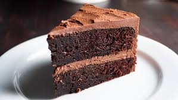
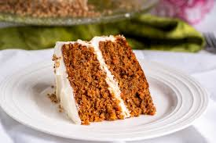

Begin by preheating your oven and preparing your cake pan with grease or parchment paper. Carefully measure your ingredients, then mix butter and sugar until light and creamy. Add the eggs one at a time, and slowly combine the dry ingredients with the wet ingredients to create a smooth, well-blended batter.


Pour the batter into the pan and place it in the center of the oven. Bake until the cake rises and a toothpick inserted in the middle comes out clean. Let the cake cool in the pan for a few minutes, then transfer it to a rack to cool completely before frosting or serving.


| Cake Type | Main Ingredients | Baking Time | Image |
|---|---|---|---|
| Chocolate Cake | Flour, sugar, cocoa powder, eggs, butter, baking powder | 30-35 minutes |  |
| Vanilla Cake | Flour, sugar, eggs, butter, vanilla extract, baking powder | 25-30 minutes | |
| Red Velvet Cake | Flour, sugar, cocoa powder, buttermilk, eggs, butter, red food coloring | 30-35 minutes | |
| Carrot Cake | Flour, sugar, grated carrots, eggs, oil, baking powder, cinnamon | 40-45 minutes |  |
| Lemon Cake | Flour, sugar, eggs, butter, lemon juice, lemon zest, baking powder | 25-30 minutes | |